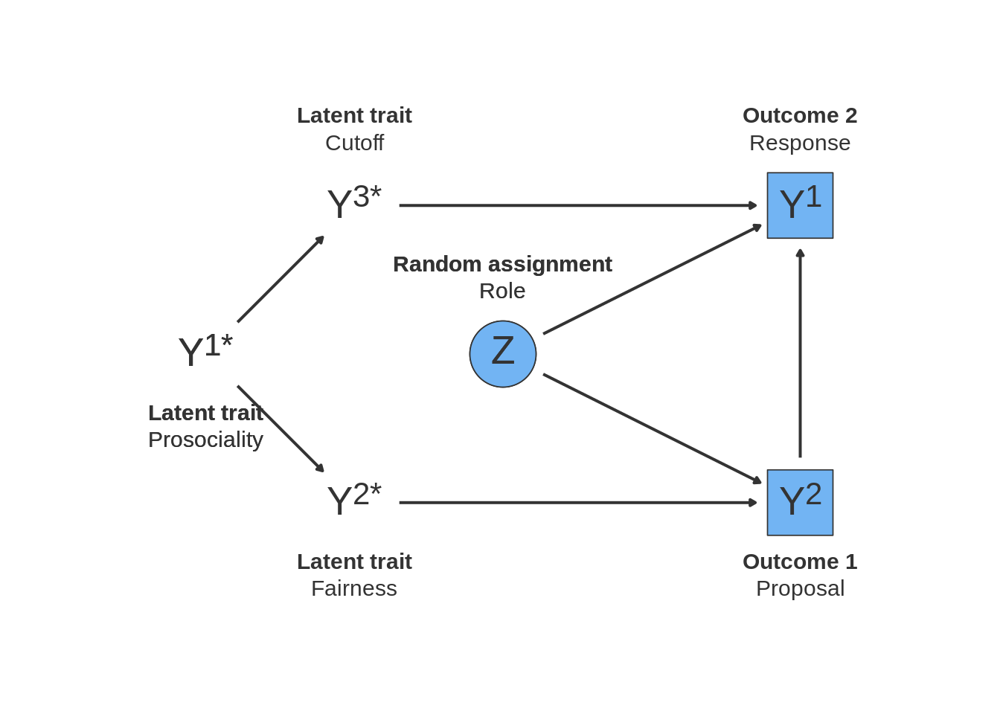
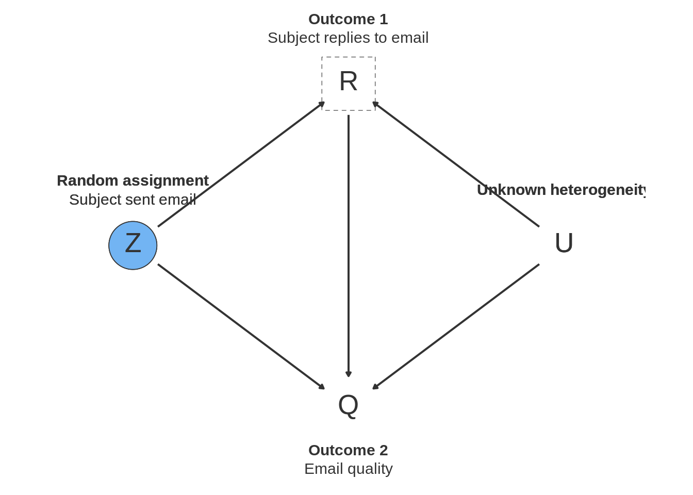

15.2 Experiments for sensitive questions
15.2.1 Declaration
design <-
declare_population(
N = 100,
U = rnorm(N),
Y_star = rbinom(N, size = 1, prob = 0.3),
S = case_when(Y_star == 0 ~ 0L,
Y_star == 1 ~ rbinom(N, size = 1, prob = 0.2)),
X = rbinom(N, size = 3, prob = 0.5)
) +
declare_estimand(proportion = mean(Y_star)) +
declare_measurement(Y_direct = Y_star - S) +
declare_potential_outcomes(Y_list ~ Y_star * Z + X) +
declare_assignment(prob = 0.5) +
declare_estimator(Y_direct ~ 1,
model = lm_robust,
estimand = "proportion",
label = "direct") +
declare_estimator(Y_list ~ Z, estimand = "proportion", label = "list")15.2.2 Dag

15.2.3 Example
- setup: a descriptive estimand, the proportion holding sensitive characteristic; two experimental designs to recover it, list experiments and randomized response
- if identification assumptions are violated (focus on ceiling/floor), estimates of ATE still unbiased but not for the descriptive estimand
- compare design where the ceiling/floor categories are minimized through Glynn (2013) design advice to use negatively-correlated items and a high prevalence and a low prevalence item
- both designs exhibit bias-variance tradeoff (more control of variance with RR)
15.2.4 List experiments
Sometimes, subjects might not tell the truth when asked about certain attitudes or behaviors. Responses may be affected by sensitivity bias, or the tendency of survey subjects to dissemble for fear of negative repercussions if some reference group learns their true response (Blair, Coppock, and Moor 2018). In such cases, standard survey estimates based on direct questions will be biased. One class of solutions to this problem is to obscure individual responses, providing protection from social or legal pressures. When we obscure responses systematically through an experiment, we can often still identify average quantities of interest. One such design is the list experiment (introduced by Miller (1984)), which asks respondents for the count of the number of `yes’ responses to a series of questions including the sensitive item, rather than for a yes or no answer on the sensitive item itself. List experiments give subjects cover by aggregating their answer to the sensitive item with responses to other questions.
During the 2016 Presidential Election in the U.S., some observers were concerned that pre-election estimates of support for Donald Trump might have been downward biased by “Shy Trump Supporters” – survey respondents who supported Trump in their hearts, but were embarrassed to admit it to pollsters. To assess this possibility, Coppock (2017) obtained estimates of Trump support that were free of social desirability bias using a list experiment. Subjects in the control and treatment groups were asked: “Here is a list of [three/four] things that some people would do and some people would not. Please tell me HOW MANY of them you would do. We do not want to know which ones of these you would do, just how many. Here are the [three/four] things:”
| Control | Treatment |
|---|---|
| If it were up for a vote, I would vote to raise the minimum wage to 15 dollars an hour | If it were up for a vote, I would vote to raise the minimum wage to 15 dollars an hour |
| If it were up for a vote, I would vote to repeal the Affordable Care Act, also known as Obamacare | If it were up for a vote, I would vote to repeal the Affordable Care Act, also known as Obamacare |
| If it were up for a vote, I would vote to ban assault weapons | If it were up for a vote, I would vote to ban assault weapons |
| If the 2016 presidential election were being held today and the candidates were Hillary Clinton (Democrat) and Donald Trump (Republican), I would vote for Donald Trump. |
The treatment group averaged 1.843 items while the control group averaged 1.548 items, for a difference-in-means estimate 0.296. We will show this is an unbiased estimator for the average treatment effect between being asked to respond to the treated list and the control list (invoking the usual assumptions of randomized experiments, including SUTVA). But our estimand is the proportion of people who support Donald Trump. For the difference-in-means to be an unbiased estimator of the proportion of respondents who would say “yes” to the sensitive item, we invoke two additional assumptions: no design effects and no “liars” (see Imai 2011). The first highlights the fact that we need a good estimate of the average control item count from the control group (in this example 1.843). We use that to net out the control item count from responses to the treated group (what is left is the sensitive item proportion). When respondents provide a different control item count in the treated group than in the control group, for example because they evaluate items relatively and the inclusion of the sensitive item changes their answers (see Flavin and Keane 2011), the design breaks down. The no liars assumption says that respondents provide truthful answers to the sensitive item within the count. The justification for the assumption is that the plausible cover of being asked within a count makes it possible for respondents to answer truthfully.
The estimate is, under these assumptions, free from sensitivity bias, but it’s also much higher variance. The 95% confidence interval for the list experiment estimate is nearly 14 percentage points wide, whereas the the 95% confidence interval for the (possibly biased!) direct question asked of the same sample is closer to 4 percentage points.
The choice between list experiments and direct question is therefore a bias-variance tradeoff. List experiments may have less bias, but they are higher variance. Direct questions may be biased, but they have less variance.
15.2.4.1 Declaration
Model: Our model includes subjects’ true support for Donald Trump and whether or not they are “shy”. These two variables combine to determine how subjects will respond when asked directly about Trump support.
The potential outcomes model combines three types of information to determine how subjects will respond to the list experiment: their responses to the three nonsensitive control items, their true support for Trump, and whether they are assigned to see the treatment or the control list. Notice that our definition of the potential outcomes embeds the no liars and no design effects assumptions required for the list experiment design.
We also have a global parameter that reflects our expectations about the proportion of Trump supporters who are shy. It’s set at 6%, which is large enough to make a difference for polling, but not so large as to be implausible.
Inquiry: Our estimand is the proportion of voters who actually plan to vote for Trump.
Data strategy: First we sample 500 respondents from the U.S. population at random, then we randomly assign 250 of the 500 to treatment and the remainder to control. In the survey, we ask subjects both the direct question and the list experiment question.
Answer strategy: We estimate the proportion of truthful Trump voters in two ways. First, we take the mean of answers to the direct question. Second, we take the difference in means in the responses to the list experiment question.
# Model -------------------------------------------------------------------
proportion_shy <- .06
list_design <-
# Model
declare_population(
N = 5000,
# true trump vote (unobservable)
truthful_trump_vote = draw_binary(.45, N),
# shy voter (unobservable)
shy = draw_binary(proportion_shy, N),
# direct question response (1 if Trump supporter and not shy, 0 otherwise)
Y_direct = if_else(truthful_trump_vote == 1 & shy == 0, 1, 0),
# nonsensitive list experiment items
raise_minimum_wage = draw_binary(.8, N),
repeal_obamacare = draw_binary(.6, N),
ban_assault_weapons = draw_binary(.5, N)
) +
declare_potential_outcomes(
Y_list_Z_0 = raise_minimum_wage + repeal_obamacare + ban_assault_weapons,
Y_list_Z_1 = Y_list_Z_0 + truthful_trump_vote
) +
# Inquiry
declare_estimand(proportion_truthful_trump_vote = mean(truthful_trump_vote),
ATE = mean(Y_list_Z_1 - Y_list_Z_0)) +
# Data Strategy
declare_sampling(n = 500) +
declare_assignment(prob = .5) +
declare_reveal(Y_list) +
# Answer Strategy
declare_estimator(
Y_direct ~ 1, model = lm_robust, term = "(Intercept)", estimand = "proportion_truthful_trump_vote", label = "direct") +
declare_estimator(
Y_list ~ Z, model = difference_in_means, estimand = c("proportion_truthful_trump_vote", "ATE"), label = "list")The plot shows the sampling distribution of the direct and list experiment estimators. The sampling distribution of the direct question is tight but biased; the list experiment (if the requisite assumptions hold) is unbiased, but higher variance. The choice between these two estimators of the prevalence rate depends on which – bias or variance – is more important in a particular setting. See Blair, Coppock, and Moor (2018) for an extended discussion of how the choice of research design depends deeply on the purpose of the project.

15.2.4.2 Violations of identifying assumptions
In our model, the definition of the treated potential outcome, Y_list_Z_1 = Y_list_Z_0 + truthful_trump_vote, bakes in the no design effects and no liars assumptions. The first component is the control item count Y_list_Z_0, which ensures the respondent’s count of control items is the same in both groups. The second is the true trump vote, which assumes no liars.
What do we learn from this experimental design if these assumptions do not hold? We examine the case of “ceiling effects,” in which respondents whose control item count is the maximum (in the example, they would vote yes to all three control items) withhold their true support for Trump in the treatment group. We thus redefine the treated potential outcome to be a function of the original count, but those who would respond 4 (all control items plus Trump support) instead respond 3. These are the “liars.”
list_design_ceiling <- replace_step(
list_design, step = 2,
new_step = declare_potential_outcomes(
Y_list_Z_0 = raise_minimum_wage + repeal_obamacare + ban_assault_weapons,
Y_list_Z_1_no_liars = Y_list_Z_0 + truthful_trump_vote,
Y_list_Z_1 = ifelse(Y_list_Z_1_no_liars == 4, 3, Y_list_Z_1_no_liars))
)diagnosis_list_ceiling <- diagnose_design(list_design_ceiling, sims = sims, bootstrap_sims = b_sims)| estimator_label | estimand_label | bias | rmse |
|---|---|---|---|
| list | ATE | -0.022 | 0.091 |
| direct | proportion_truthful_trump_vote | -0.026 | 0.031 |
| list | proportion_truthful_trump_vote | -0.127 | 0.153 |
We see that the list experiment is still an unbiased estimator for the average difference in responses to the treatment list and the shorter control list (ATE). But under ceiling effects, it is no longer an unbiased estimator for the proportion of truthful Trump vote. Indeed, it is more unbiased than the direct question. The divergence illustrates a common feature of experimental designs for descriptive inference: the average treatment effect can be estimated without bias under SUTVA and randomization with these designs, but additional assumptions are required in order to add an interpretation of the ATE as the descriptive quantity of interest. The burden is on the researcher to demonstrate the credibility of these additional assumptions. The experimental design alone is not sufficient justification.
15.2.4.3 Addressing potential assumption violations by design
Researchers may bolster the assumptions to identify the descriptive estimand through changes to the data strategy or the answer strategy. Changes to the data strategy for the list experiment aim to reduce the risk of design effects and violations of the no liars assumptions. For example, when there is a risk of ceiling effects, Glynn (2013) proposes selecting control items that are inversely correlated. With three items, if two of the items are perfectly negatively correlated (i.e., if you say “yes” to one item you say “no” to the other), then the control item count will always be below the maximum of three when ceiling effects bite. We illustrate this design change by replacing the population declaration for the design with ceiling effects. This change is in the population, but is really a part of the data strategy because it involves the choice of measurement tool (which control items the researcher selects to ask respondents).
We see that the design is stil lunbiased for the ATE and now is unbiased for the proportion of truthful Trump vote. This is because there are no longer ceiling effects, which represented a violation of the no design effects assumption required to interpret the ATE as the proportion of truthful Trump vote.
Changes the answer strategy have been proposed to address both the no design effects and no liars assumption. Blair and Imai (2012) propose a statistical test for the design effects assumption; if it does not pass, they suggest not analyzing the list experiment data (i.e., this is a procedure that makes up an answer strategy). Scholars have also identified improvements to the answer strategy to address violations of no liars: Blair and Imai (2012) provides a model that adjusts for ceiling and floor effects and Li (2019) provides a bounds approach that relaxes the assumption.
15.2.5 Randomized response technique
library(rr)
rr_forced_known <- function(data) {
fit <- try(rrreg(Y_forced_known ~ 1, data = data, p = 2/3, p0 = 1/6, p1 = 1/6, design = "forced-known"))
pred <- try(as.data.frame(predict(fit, avg = TRUE, quasi.bayes = TRUE)))
if(class(fit) != "try-error" & class(pred) != "try-error") {
names(pred) <- c("estimate", "std.error", "conf.low", "conf.high")
pred$p.value <- with(pred, 2 * pnorm(-abs(estimate / std.error)))
} else {
pred <- data.frame(estimate = NA, std.error = NA, conf.low = NA, conf.high = NA, p.value = NA, error = TRUE)
}
pred
}
rr_mirrored <- function(data) {
fit <- try(rrreg(Y_mirrored ~ 1, data = data, p = 2/3, design = "mirrored"))
pred <- try(as.data.frame(predict(fit, avg = TRUE, quasi.bayes = TRUE)))
if(class(fit) != "try-error" & class(pred) != "try-error") {
names(pred) <- c("estimate", "std.error", "conf.low", "conf.high")
pred$p.value <- with(pred, 2 * pnorm(-abs(estimate / std.error)))
} else {
pred <- data.frame(estimate = NA, std.error = NA, conf.low = NA, conf.high = NA, p.value = NA, error = TRUE)
}
pred
}
proportion_shy <- .06
rr_design <-
declare_population(
N = 100,
# true trump vote (unobservable)
truthful_trump_vote = draw_binary(.45, N),
# shy voter (unobservable)
shy = draw_binary(proportion_shy, N),
# Direct question response (1 if Trump supporter and not shy, 0 otherwise)
Y_direct = as.numeric(truthful_trump_vote == 1 & shy == 0)) +
declare_estimand(sensitive_item_proportion = mean(truthful_trump_vote)) +
declare_potential_outcomes(Y_forced_known ~ (dice == 1) * 0 + (dice %in% 2:5) * truthful_trump_vote + (dice == 6) * 1, conditions = 1:6, assignment_variable = "dice") +
declare_potential_outcomes(Y_mirrored ~ (coin == "heads") * truthful_trump_vote + (coin == "tails") * (1 - truthful_trump_vote), conditions = c("heads", "tails"), assignment_variable = "coin") +
declare_assignment(prob_each = rep(1/6, 6), conditions = 1:6, assignment_variable = "dice") +
declare_assignment(prob_each = c(2/3, 1/3), conditions = c("heads", "tails"), assignment_variable = "coin") +
declare_reveal(Y_forced_known, dice) +
declare_reveal(Y_mirrored, coin) +
declare_estimator(handler = tidy_estimator(rr_forced_known), label = "forced_known", estimand = "sensitive_item_proportion") +
declare_estimator(handler = tidy_estimator(rr_mirrored), label = "mirrored", estimand = "sensitive_item_proportion") +
declare_estimator(Y_direct ~ 1, model = lm_robust, term = "(Intercept)", label = "direct", estimand = "sensitive_item_proportion")
rr_design <- set_diagnosands(rr_design, diagnosands = declare_diagnosands(select = c(mean_estimate, bias, rmse, power)))| Design Label | Estimand Label | Estimator Label | Term | N Sims | Mean Estimate | Bias | RMSE | Power |
|---|---|---|---|---|---|---|---|---|
| rr_design | sensitive_item_proportion | direct | (Intercept) | 10 | 0.43 | -0.02 | 0.03 | 1.00 |
| (0.01) | (0.00) | (0.00) | (0.00) | |||||
| rr_design | sensitive_item_proportion | forced_known | NA | 10 | 0.45 | -0.00 | 0.02 | 1.00 |
| (0.02) | (0.01) | (0.00) | (0.00) | |||||
| rr_design | sensitive_item_proportion | mirrored | NA | 10 | 0.42 | -0.03 | 0.09 | 0.90 |
| (0.04) | (0.03) | (0.02) | (0.10) |
15.2.6 References
References
Blair, Graeme, Alexander Coppock, and Margaret Moor. 2018. “When to Worry About Sensitivity Bias: Evidence from 30 Years of List Experiments.” Unpublished Manuscript.
Blair, Graeme, and Kosuke Imai. 2012. “Statistical Analysis of List Experiments.” Political Analysis 20 (1): 47–77.
Coppock, Alexander. 2017. “Did Shy Trump Supporters Bias the 2016 Polls? Evidence from a Nationally-Representative List Experiment.” Statistics, Politics and Policy 8 (1): 29–40.
Glynn, Adam N. 2013. “What Can We Learn with Statistical Truth Serum? Design and Analysis of the List Experiment.” Public Opinion Quarterly 77 (S1): 159–72.
Li, Yimeng. 2019. “Relaxing the No Liars Assumption in List Experiment Analyses.” Political Analysis 27 (4): 540–55.
Miller, Judith Droitcour. 1984. “A New Survey Technique for Studying Deviant Behavior.” PhD thesis, George Washington University.